Profile
矢上 唯
はじめまして。スーパーホワイトハッカー専攻の矢上唯です。趣味はラーメン巡りです。ホワイトハッカー専攻ですが、内定先はスーパーです。
生年月日
2003/01/23
学校名
東京デザインテクノロジーセンター専門学校
学年／専攻
4年/スーパーホワイトハッカー専攻
趣味
ラーメン巡り
出身地
東大和市
長所
素直さと愛嬌
短所
楽観的
特技
もう二度と話さないだろうなっていう人とのコミュニケーション
Favorite ramen
好きな醤油
飯田商店
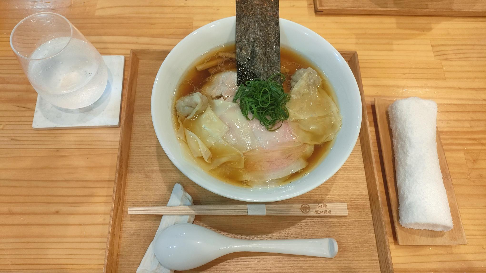好きな塩
しおらーめん進化
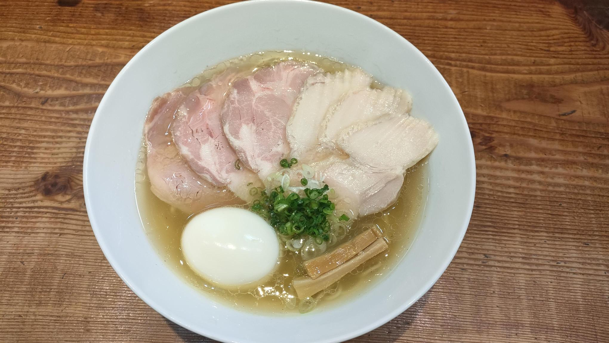好きなつけ麺
RAMEN FeeL
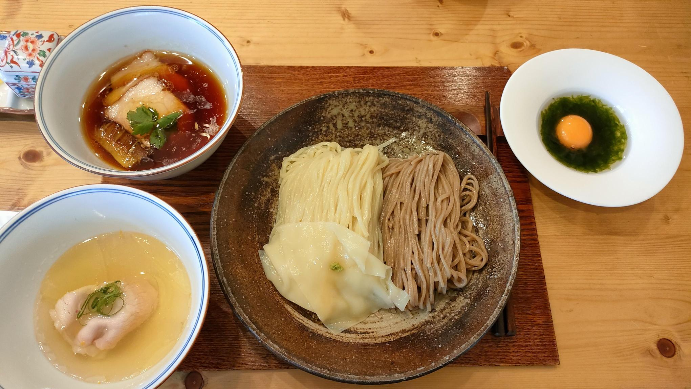好きな豚骨
大学ラーメン
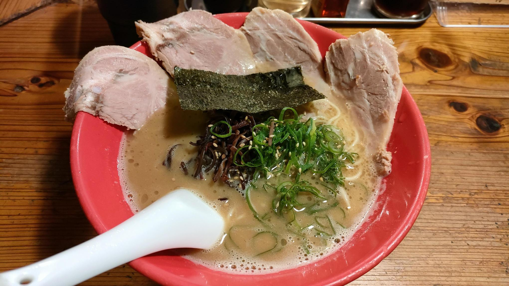そこそこおいしかったラーメン
中華そば 流川
特製 牛貝清湯醤油そば
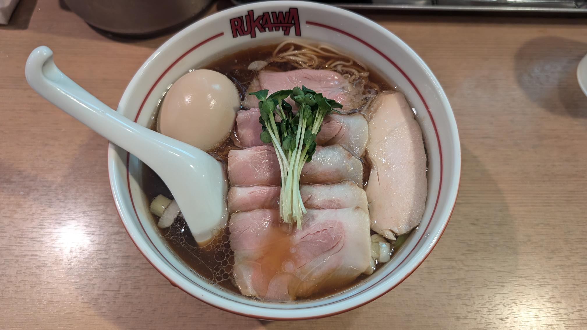元祖羽村ラーメン マルフル食堂
ワンタン付けそば
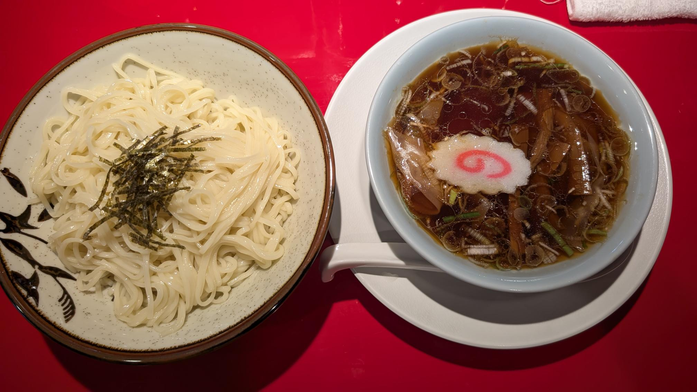麵屋 HAKU
特製ラーメン 醤油
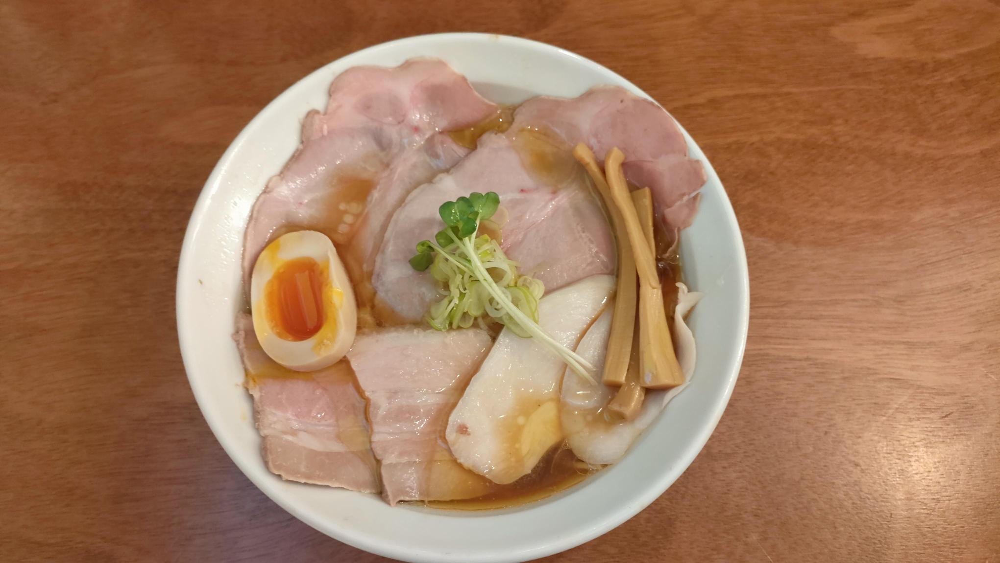金目鯛らぁめん 鳳仙花
つけ麺
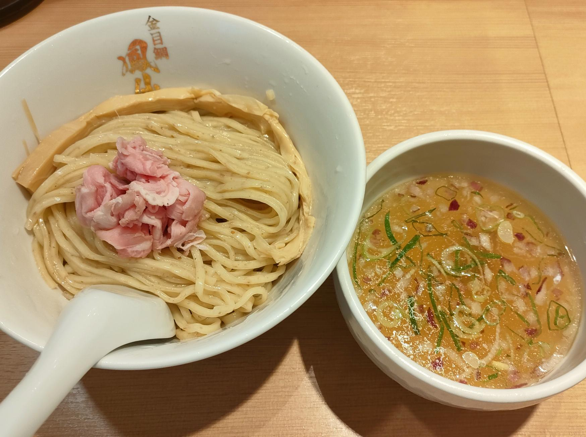㐂りん食堂
鴨つけ麺
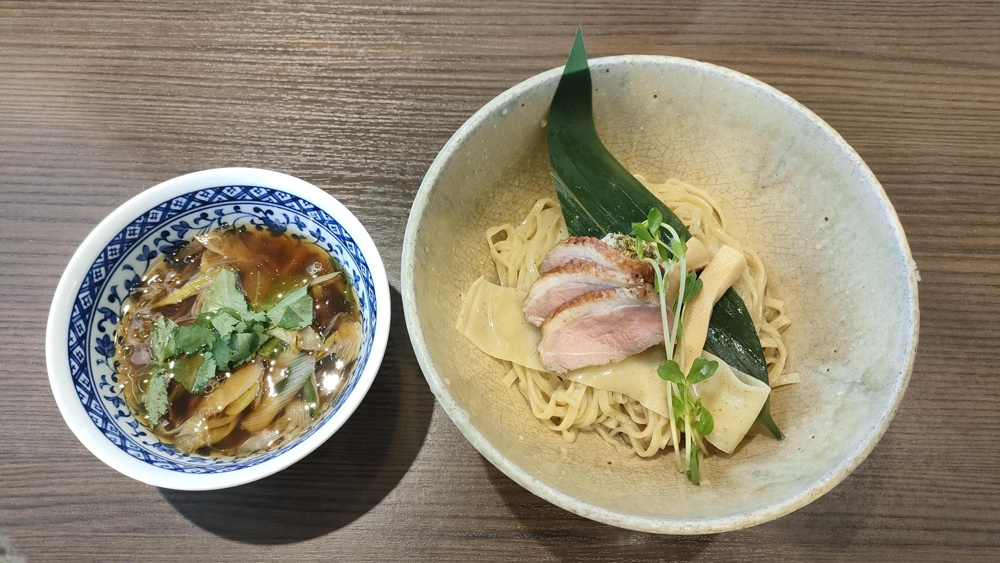中華そば きなり
味たま塩そば
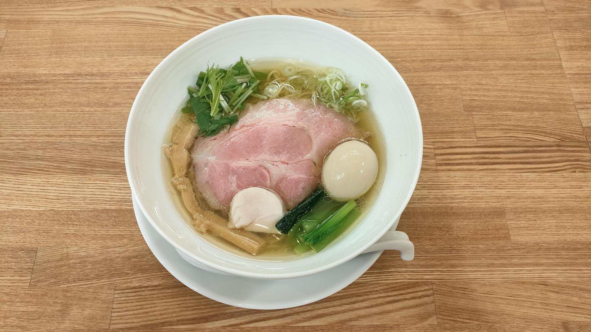駄目な隣人
SUPREME（特製らーめん）
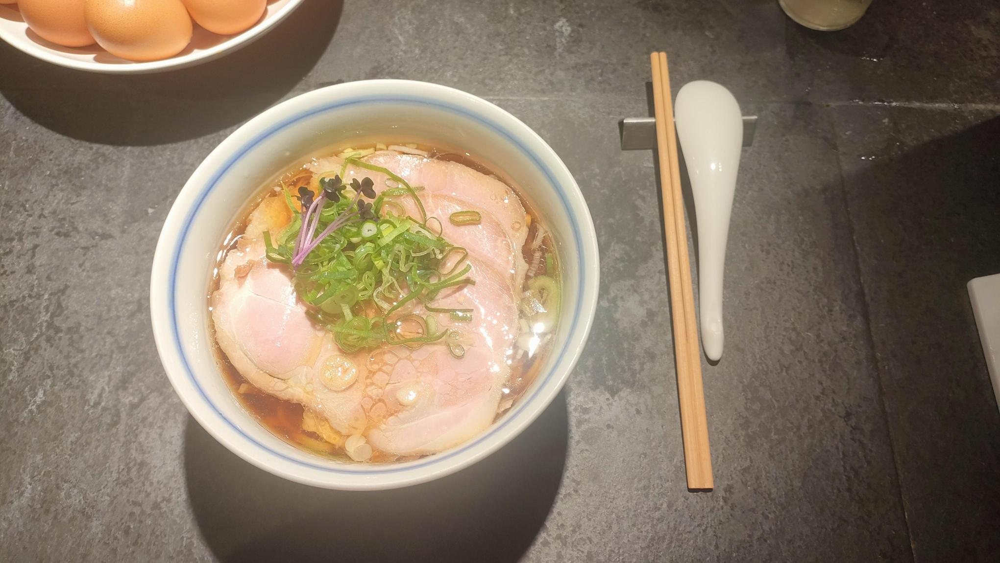楽観
特製琥珀
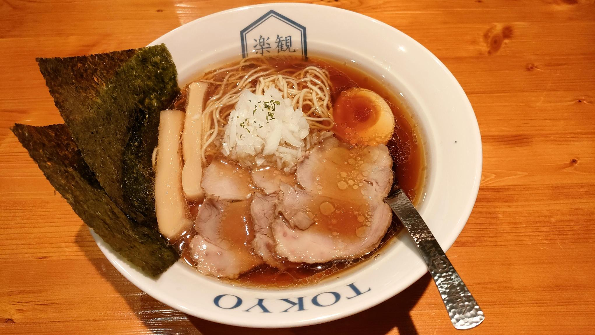